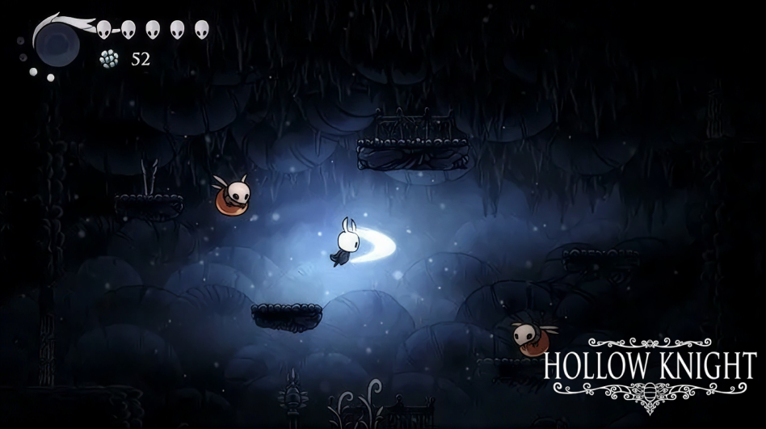
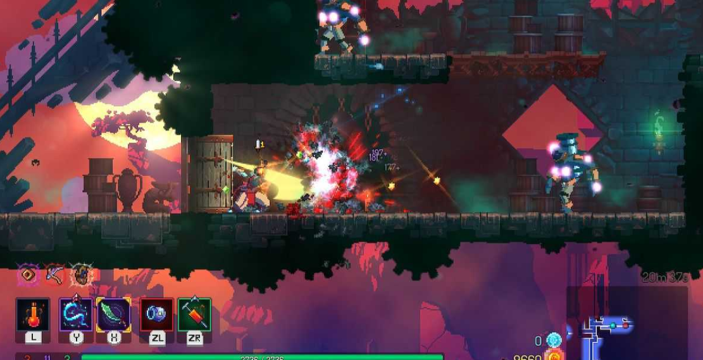
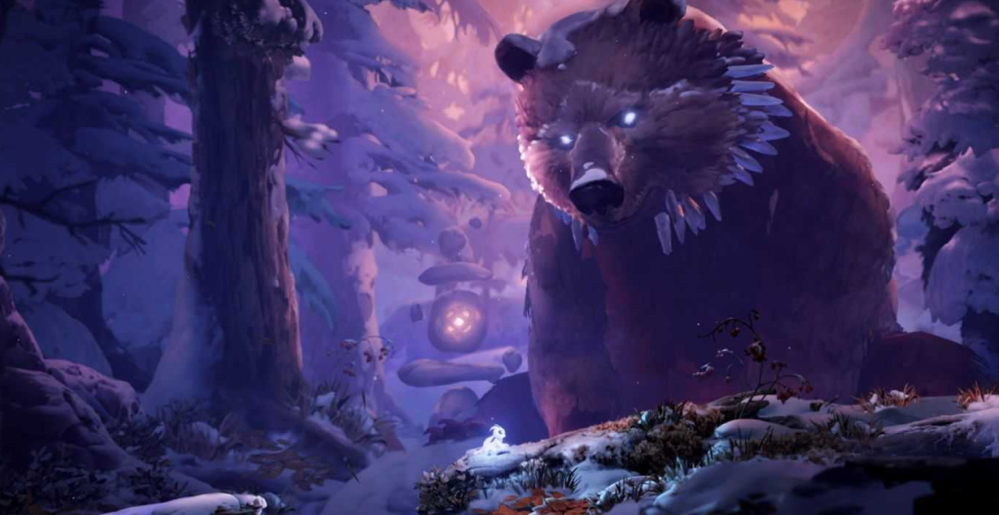

Metroidvania
Metroidvanias are games where you have to parkour and fight enemies to progress. These games are side‐scrollers, which mean you look at the character and the world from the side, like Super Mario Bros.
These games often require quick and precise movement to get further into the game. Throughout these games you unlock abilities to progress to other areas.
Metroidvanias are often considered as hard as souls‐like games, such as Dark Souls and Elden Ring. So these games are for people who like a challenge.
Here is the list of metroidvania games:

Hollow Knight
PC, Nintendo Switch, PS and Xbox
Hollow Knight is a beautiful game with amazing sound design and an adorable art style. The movement feels great and it is very fun. This was my second ever Metroidvania I have played and completed (not 114%, but i wll try)
The gameplay is great and with every unlocked ability it expands where you are able to go and gives a refreshing and unique way of playing the game.
The bosses can be difficult at times, but while playing through the game you can see yourself become better at parkouring and fighting bosses. I can*t recommend this game enough to people who enjoy hard games, platformers, and metroidvanias.
The developer team of Hollow Knight is a group of 3 developers: Ari Gibson, William Pellen, Jack Vine.

Dead Cells
PC, Nintendo Switch, PS, Xbox and mobile
Dead Cells is an amazing action‐packed roguelike metroidvania that keeps you hooked from the start. The fast-paced combat, smooth controls, and challenging enemies make every run exciting. The pixel‐art graphics look amazing, and the soundtrack matches the intense atmosphere perfectly.
I love how the weapons, upgrades, and randomly generated levels make each attempt feel unique. Although it is a very hard game, overcoming these challenges feels very rewarding.
I would recommend Dead Cells to anyone who enjoys action, platforming and replayability.
The name Metroidvania comes from two classic game series called: Metroid and Castlevania.

Ori and the Will of the Wisps
PC, Nintendo Switch and Xbox
Ori and the Will of the Wisps is one of the most beautiful games i have ever played. It is an adventure game with stunning visuals, emotional story and an amazing soundtrack.
The hand‐painted environments make every location stunning, while the smooth movement and challenging platforming keep the gameplay fresh. The combat system feel good, offering variety and it’s pretty fun. Although some sections are pretty hard, the overall surrounding and gameplay is rewarding.
I would definitely recommend this game to people who enjoy beautiful platforming games.
Though Metroidvanias are named after Metroid and Castlevania, they are not the first examples of a Metroidvania. The first ever game to implement similar gameplay mechanics is Brain Breaker which came out in 1985, a year before Metroid.